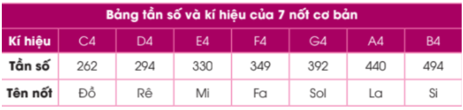

11. Bài học 8: Phát nhạc với còi báo
Mục tiêu
Tương tự như module đèn LED, còi báo (buzzer) được tích hợp trên board xController cũng là một module thuộc loại output, có chức năng phát ra âm thanh. Trong bài học này, chúng ta sẽ học cách dùng thư viện xController để buzzer phát ra các nốt nhạc và ghép thành một bài nhạc hoàn chỉnh.
Thiết bị cần sử dụng

Viết chương trình
Mở phần mềm uPyCraft.
Tạo một file chương trình mới (
File > New) và lưu với tên main.py bằng cách chọn menuFile > Save….Copy đoạn code sau, click vào nút
DownloadAndRunđể chạy chương trình.
# Phát bài nhạc Twinkle twinkle little stars
# Đoạn 1: Đồ, Đồ, Son, Son, La, La, Son
def song_1():
speaker.play(['C4:1'], wait=True)
speaker.play(['C4:1'], wait=True)
speaker.play(['G4:1'], wait=True)
speaker.play(['G4:1'], wait=True)
speaker.play(['A4:1'], wait=True)
speaker.play(['A4:1'], wait=True)
speaker.play(['G4:1'], wait=True)
# Đoạn 2: Fa, Fa, Mi, Mi, Rê, Rê, Đồ
def song_2():
speaker.play(['F4:1'], wait=True)
speaker.play(['F4:1'], wait=True)
speaker.play(['E4:1'], wait=True)
speaker.play(['E4:1'], wait=True)
speaker.play(['D4:1'], wait=True)
speaker.play(['D4:1'], wait=True)
speaker.play(['C4:1'], wait=True)
while True:
song_1()
time.sleep(0.5)
song_2()
time.sleep(1)
Giải thích chương trình
Với những chương trình dài có nhiều khối lệnh, chúng ta sẽ sử dụng Hàm để rút gọn những chương trình đó. Hàm sẽ chứa những hàm con bên trong. Khi bạn gọi tên Hàm thì các lệnh hàm con bên trong sẽ được thực hiện. Ta sử dụng cấu trúc sau để tạo một hàm:
def name():
# Doing something
Trong đó name là tên mà bạn muốn đặt cho hàm này. Khi bạn gọi name() ở bất kì đâu thì nó sẽ thực hiện những hàm bên trong này mà không cần phải viết lại.
Chúng ta sẽ viết 1 bài nhạc gồm 2 đoạn
Đoạn 1: Đồ, Đồ, Son, Son, La, La, Son
Đoạn 2: Fa, Fa, Mi, Mi, Rê, Rê, Đồ
Vì thế chúng ta sẽ tạo hai hàm song_1(), song_2():
# Đoạn 1: Đồ, Đồ, Son, Son, La, La, Son
def song_1():
speaker.play(['C4:1'], wait=True)
speaker.play(['C4:1'], wait=True)
speaker.play(['G4:1'], wait=True)
speaker.play(['G4:1'], wait=True)
speaker.play(['A4:1'], wait=True)
speaker.play(['A4:1'], wait=True)
speaker.play(['G4:1'], wait=True)
def song_2():
speaker.play(['F4:1'], wait=True)
speaker.play(['F4:1'], wait=True)
speaker.play(['E4:1'], wait=True)
speaker.play(['E4:1'], wait=True)
speaker.play(['D4:1'], wait=True)
speaker.play(['D4:1'], wait=True)
speaker.play(['C4:1'], wait=True)
Trong các hàm song_1() ``và ``song_2() của chương trình, hàm speaker.play() được sử dụng để phát ra nhạc. Hàm này có cú pháp như sau:
speaker.play(tune, wait=False, loop=False, duration=None)
Ý nghĩa các tham số:
tune: Có thể là 1 trong các bài hát hoặc một tone nhạc nào đó:

Bài hát: BIRTHDAY, TWINKLE, JINGLE_BELLS, WHEEL_ON_BUS, FUR_ELISE,CHASE,JUMP_UP,JUMP_DOWN,POWER_UP,POWER_DOWN
Tone: Đây là các nốt trong nhạc lý:
wait: Nếu bằng True thì sẽ phát hết bài hát mới kết thúc hàm. Mặc định nếu không ghi thì là False.
duration: Thời gian kéo dài
{kind=link}
Ngoài ra, để dừng play nhạc, bạn có thể dùng thêm hàm sau:
speaker.stop()
Sau khi chạy chương trình, còi báo tích hợp trên board xController sẽ liên tục phát ra các nốt nhạc của bài hát quen thuộc “Twinkle Twinkle Little Stars”.